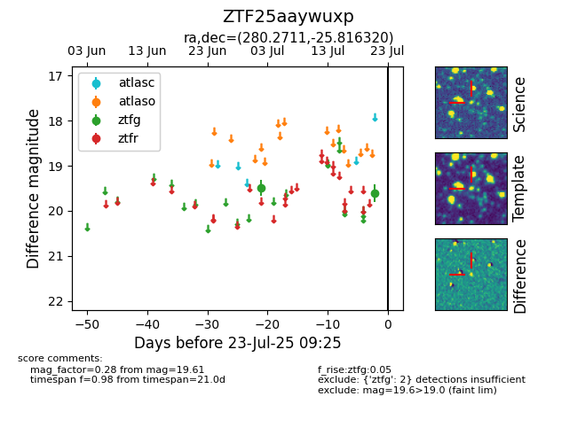

Target ZTF25aaywuxp at 2025-07-23 11:48, see:
FINK: fink-portal.org/ZTF25aaywuxp
Lasair: lasair-ztf.lsst.ac.uk/objects/ZTF25aaywuxp
ALeRCE: alerce.online/object/ZTF25aaywuxp
alt names
ZTF25aaywuxp (ztf,fink)
coordinates:
equatorial (ra, dec) = (280.2711,-25.81632)
galactic (l, b) = (8.6279,-9.34591)
photometry
last ztfg=19.61
2 ztfg detections
